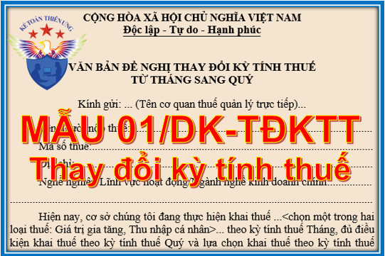

Mẫu văn bản đề nghị thay đổi kỳ tính thuế từ tháng sang quý: Mẫu số 01/DK-TĐKTT theo Thông tư 80/2021/TT-BTC ngày 29/09/2021 mới nhất hiện nay.
CỘNG HÒA XÃ HỘI CHỦ NGHĨA VIỆT NAM Độc lập - Tự do - Hạnh phúc
-----------------------------------
VĂN BẢN ĐỀ NGHỊ THAY ĐỔI KỲ TÍNH THUẾ
Tên người nộp thuế:......................................................................................TỪ THÁNG SANG QUÝ Kính gửi: ... (Tên cơ quan thuế quản lý trực tiếp)... Mã số thuế:.................................................................................................... Địa chỉ:.......................................................................................................... Nghề nghiệp/Lĩnh vực hoạt động/Ngành nghề kinh doanh chính:............... ................................................................................................................................. Hiện nay, cơ sở chúng tôi đang thực hiện khai thuế ...<chọn một trong hai loại thuế: Giá trị gia tăng, Thu nhập cá nhân>... theo kỳ tính thuế Tháng, đủ điều kiện khai thuế theo kỳ tính thuế Quý và lựa chọn khai thuế theo kỳ tính thuế Quý. Cơ sở chúng tôi đề nghị được áp dụng kỳ tính thuế ...<chọn một trong hai loại thuế: Giá trị gia tăng, Thu nhập cá nhân>... theo Quý kể từ kỳ tính thuế Quý I năm ... Cơ sở chúng tôi xin cam kết thực hiện tính thuế, khai thuế và nộp thuế theo đúng quy định của Luật Quản lý thuế, các văn bản quy phạm pháp luật thuế có liên quan (bao gồm cả các văn bản quy phạm pháp luật sửa đổi, bổ sung cũng như quy định chi tiết) hiện hành. Nếu vi phạm luật thuế và các chế độ quy định, chúng tôi xin chịu xử lý theo pháp luật./.
|
Xem thêm: Hướng dẫn cách lập tờ khai thuế GTGT theo tháng và theo quý
-----------------------------------
